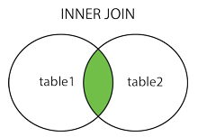

SQL and Data Science Prep
1. Submit (online) an essay describing how inner join works.
INNER JOIN is an SQL keyword that, according to w3schools.com, selects records that have matching values in both tables.
JOIN clauses are used to combine rows from two or more tables. INNER JOIN only returns records that both rows share.

2. Prepare an essay to discuss what a data scientist is. How is it comparable and different from a computer scientist?
The job of a data scientist is to make new discoveries by visualizing data and using algorithms, such as machine learning or regression, to name a few. The job is often compared to that of a computer scientist because they both involve the use of computer technology and algorithms. However, they are different in a few ways.
- A data scientist works with a data set to try to answer a question. Computer scientists try to solve problems using programming, software, and algorithms.
- Programmers require technical skills to perform. Data scientists require some technical skills along with business knowledge to perform.
- While the field of Computer Science is relatively old (some would argue it dates back to the early 1800s), the field of Data Science is new to the scene.
Pertinent question: Imagine a Computer Scientist has worked for 30 years and has become quite good at his job. For whatever reason, he wants to take his talents to a similar but new career field before he retires for good. How feasible would it be for a seasoned computer scientist to shift into the field of data science?